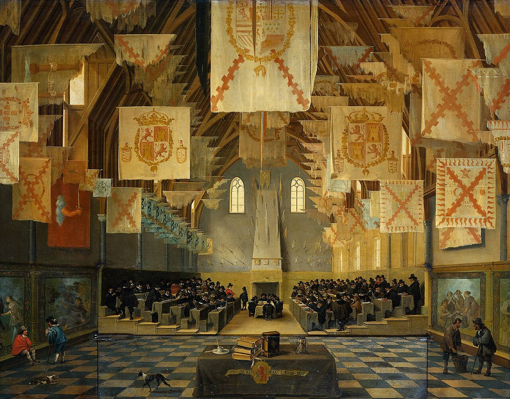
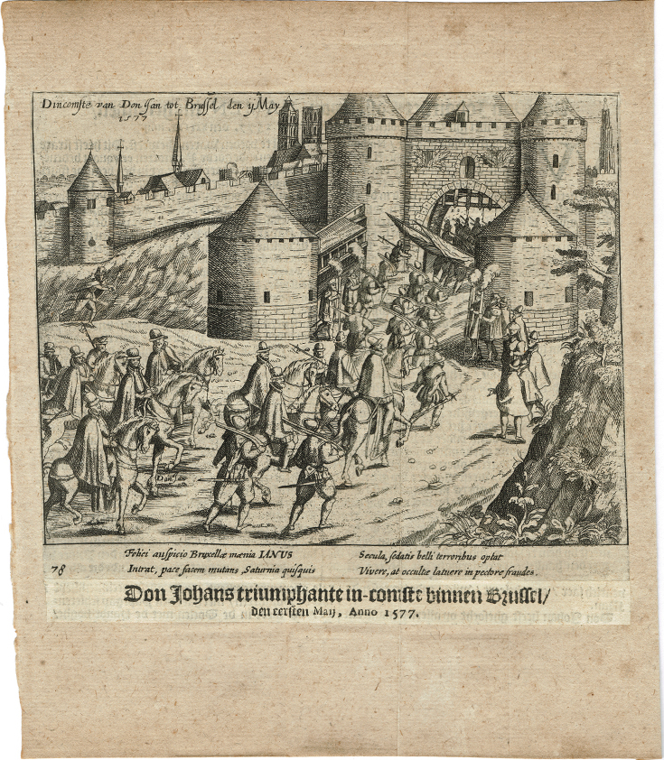
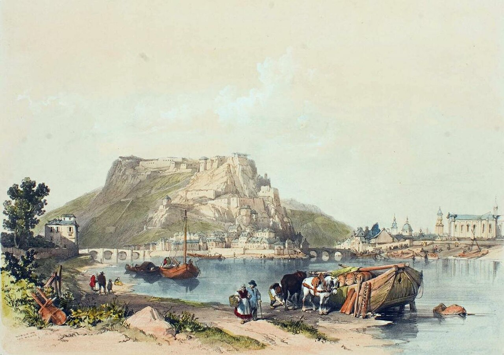
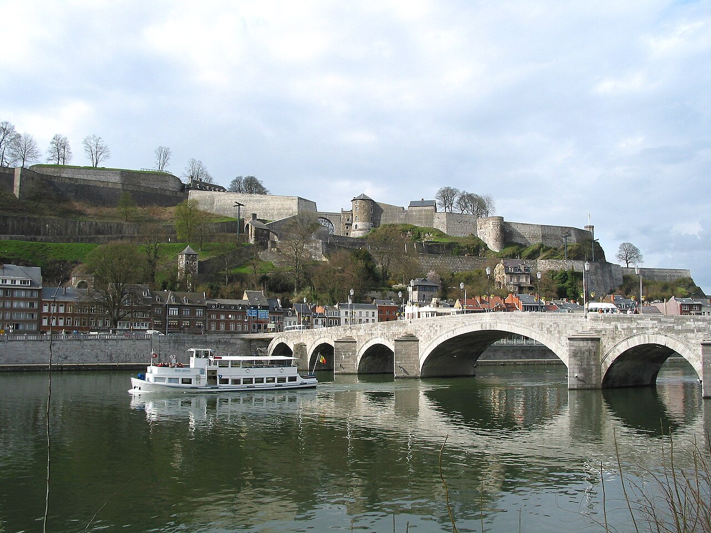
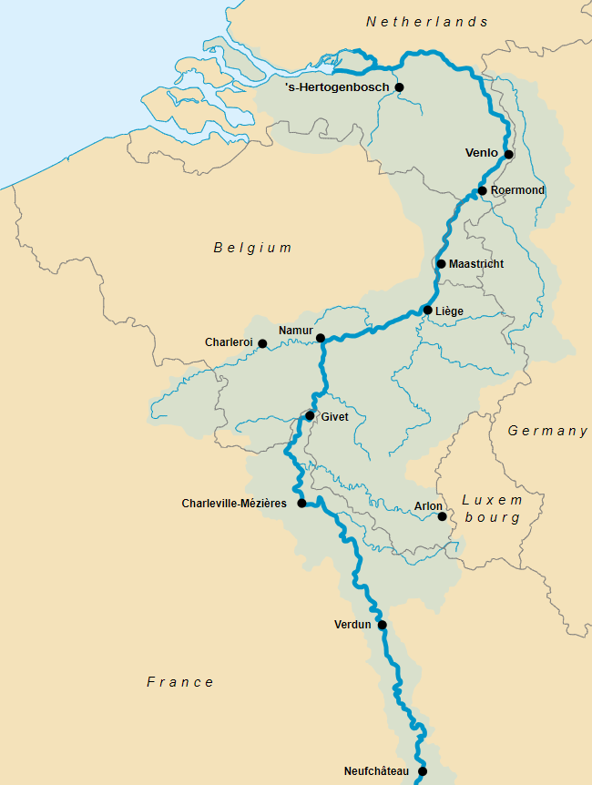
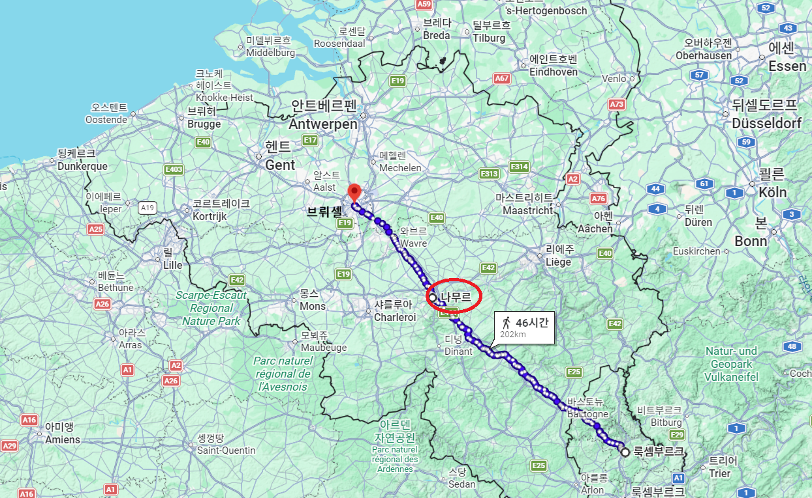
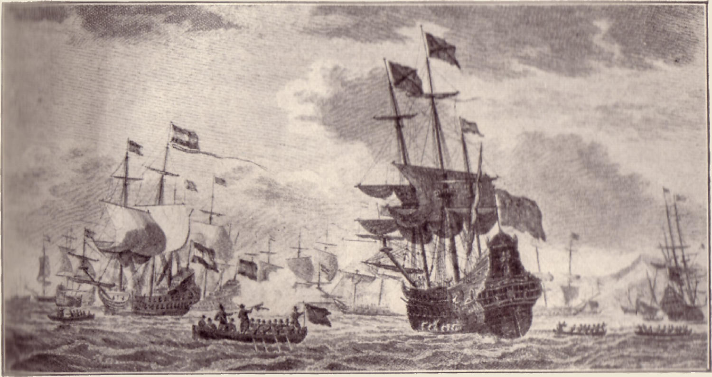
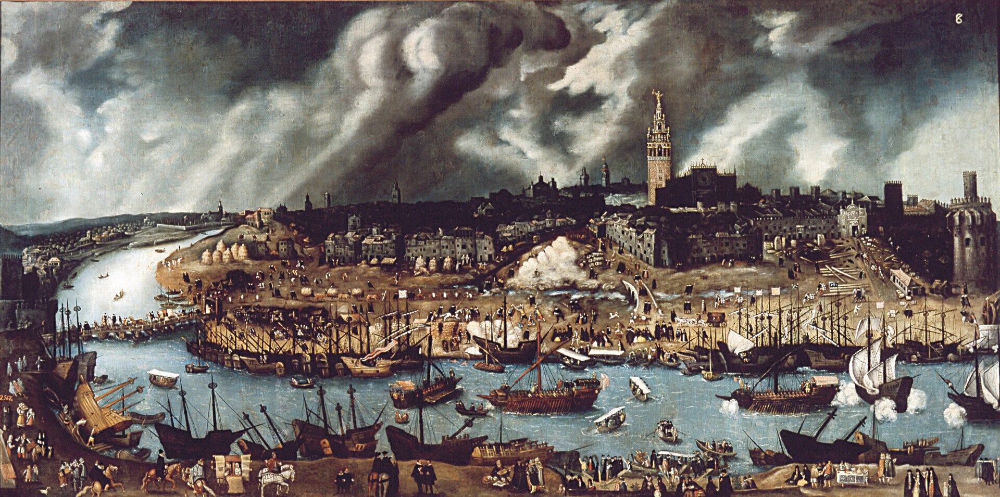

벨기에 이야기 (7) - 요새와 보물함대
게시: 2026-08-24T06:30:49+09:00
1576년의 헨트 평화협정은 급여 체불에 불만을 품고 저지대 도시들을 약탈하기 시작한 스페인군에 대한 공동 대응을 위해 급히 맺어진 것으로서, 사실 완전한 평화와는 거리가 먼 것이었습니다. 모든 갈등과 폭력의 근본 원인에는 돈이 있는 법인데, 돈 때문에 싸운다고 하면 너무 품위가 없어 보이니 보통 사람들이 대는 전쟁의 핑계가 자유와 종교입니다. 여기서도 딱 그랬습니다. 일단 스페인에서 파견된 저지대 총독이자 스페인 국왕 펠리페 2세의 이복 형제였던 돈 후안(Juan de Austria)도 헨트 협정을 추인했고 그에 따라 스페인군을 이탈리아로 철수시키긴 했지만, 헨트 평화협정은 스페인군 철수 외에도 중요한 것 2가지를 규정하고 있었습니다. 바로 의회(Staten-Generaal)의 상설화와 카톨릭 신앙의 유지였습니다. 보통 삼부회라고 번역되는 저지대의 전체 신분 의회(Staten-Generaal, 전체 계급들의 모임이라는 뜻)는 원래 스페인 국왕이나 총독만이 소집할 수 있는 기구로서, 주로 신규 세금이나 재정 지원에 대한 저지대 귀족들과 상인들의 동의를 받는 것이 삼부회 소집의 주목적이었습니다. 물론 삼부회는 그에 대한 대가로 저지대의 자치권이나 재정 집행의 특권 등을 관철시키거나 재확인 받곤 했습니다. 그러나 1576년 3월 총독 레케센스가 열병으로 급사하여 권력 공백이 생긴 상태에서 스페인군에 의한 약탈이 빈번히 일어나자 저지대 귀족들끼리 의회를 소집하여 대책을 논의했고, 그 결과로 나온 것이 헨트 평화협정이었습니다. 어떻게 보면 소집 권한이 없는 사람들끼리 제멋대로 모인 의회였므로 이건 일종의 월권행위였습니다만, 좋은 게 좋은 거라고 후임 총독 돈 후안도 문제를 삼지는 않았습니다.

(이 저지대 의회는 훗날 네덜란드 공화국의 모태가 됩니다. 이 그림은 네덜란드 독립전쟁이 종료된 직후인 1651년의 네덜란드 의회의 모습입니다. 당시 그림입니다.) 진짜 문제는 여태까지 돈만 내던 저지대 사람들끼리 제멋대로 의회를 소집해서 뭔가를 가결시키고 나니, 저지대 사람들이 권력의 맛을 보았다는 것입니다. 이들은 아예 의회를 상설화하고 그 의장은 각 주의 대표가 돌려가며 맡는 것으로 의결을 했습니다. 이건 저지대 사람들 입장에서는 자유였지만, 스페인 합스부르크 왕가에서 볼 때는 오만과 방종이었습니다. 당연히 저지대 총독 돈 후안은 그런 의회 상설화를 허용할 생각이 전혀 없었습니다. 게다가 돈 후안은 합스부르크의 젊은 영웅답게 카톨릭에 대한 열정과 신교에 대한 혐오로 불타는 인물이라, 종교적인 문제에 있어 타협할 생각이 1도 없었습니다. 홀란트와 제일란트 등 신교 위주의 반란주들은 무장 해제는 고사하고 돈 후안의 통치를 사실상 거부했으며, 자신들의 의회를 인정하지 않는 다른 카톨릭 주들도 돈 후안에 대해 반감을 드러내기 시작했습니다. 하지만 신교이건 의회이건 탄압도 힘이 있어야 하는 법입니다. 1576년 말에 총독으로 임명된 돈 후안은 1577년 5월 1일에야 총독부가 있는 브뤼셀(Brussel)로 입성했습니다. 그때는 이미 스페인군이 헨트 협정에 따라 철수한 뒤라서, 돈 후안은 브뤼셀에 소수의 호위병 외에는 아무 무력을 갖추지 못한 채 고립되어 버렸습니다. 브뤼셀은 브라반트(Brabant) 주의 수도로서 카톨릭이 다수이긴 했지만, 칼뱅파 신교 세력도 적지 않았고 특히 경제적으로나 머리 숫자로나 만만치 않았던 각종 직종 길드들이 칼뱅파안 경우가 많았습니다. 이들은 자체 무장을 갖추고 괜히 시내를 순찰 돌며 머리수 부족을 무력 과시로써 메우려 했습니다. 별다른 호위 병력도 없이 브뤼셀에 있던 돈 후안으로서는 불안하기 짝이 없는 상황이었습니다. 그 와중에 홀란트-제일란트에 또아리를 튼 반란의 수장 빌럼 오라녜가 돈 후안을 암살하려 한다는 첩보가 여럿 날아들어 돈 후안을 더더욱 불안하게 만들었습니다. 그런 암살 시도가 실제로 있었는지 여부는 알 수 없습니다만, 중요한 것은 돈 후안이 그걸 믿었다는 것이었습니다.

(1616년 암스테르담에서 인쇄된 이 판화는 1577년 5월 1일 돈 후안의 브뤼셀 환희입성 (joyeuse entrée, 조유즈 앙트레) 장면을 그린 것입니다. 조유즈 앙트레라는 것은 글자 그대로 기쁜 입성이라는 뜻으로서 외부에서 부임하는 권력자가 도시에 입성할 때 펼치는 행사 같은 것입니다만, 저지대에서는 약간 특별한 의미를 가집니다. 즉, 합스부르크 왕가의 총독을 받아들이는 대가로 그 도시의 귀족들이 자신들의 특권 등을 문서로 재확인 받는 절차가 따랐던 것입니다. 그래서 조유즈 앙트레라고 하면 부임하는 총독의 명예를 드높이는 행사라기보다는 그 도시 귀족들의 특권 인정을 뜻하는 것으로서, 일종의 원시적 헌법 비슷한 의미를 가지고 있었습니다.) 이런 상황은 불안에 시달린 돈 후안이 결국 1577년 7월, 사냥 및 친지 방문을 핑계로 브뤼셀을 빠져나와 나뮈르(Namur)에 입성한 뒤, 의심하지 않고 그를 환대하던 나뮈르 성주를 소수의 호위병만으로 협박하여 나뮈르 요새(citadel)를 점령하는 사태로 이어졌습니다. 돈 후안은 왜 하필 나뮈르 요새를 점령한 것이었을까요? 나뮈르는 프랑스에서 흘러오는 꽤 큰 뫼즈(Meuse) 강과 작은 상브르(Sambre) 강이 합쳐지는 곳에 위치한 교통의 요지로서, 이탈리아 밀라노와 부르고뉴에서 룩셈부르크를 거쳐 브뤼셀로 오는 길목에 있는 도시였습니다. 즉, 스페인군이 저지대로 진입하던 스페인 가도(El Camino Español)의 끝부분이자 저지대로 들어오기 위해 꼭 거쳐야 하는 관문이었습니다. 그러니까 돈 후안의 다소 엉뚱한 이 행동은 스페인 가도를 통해 다시 스페인군을 불러들이겠다는 선포나 다름 없었고, 실제로 돈 후안은 즉각 펠리페 2세에게 급서를 보내 병력 재배치를 요청했습니다. 당연히 저지대에는 다시 무장 반란의 바람이 거세게 불어닥쳤습니다.

(돈 후안이 점령했던 나뮈르 요새의 그림입니다. 다만 이건 보방식 요새로 개조된 이후인 1838년의 모습으로서, 돈 후안이 점령할 때는 좀 더 중세스러운 모습을 하고 있었습니다.)

(현재도 남아 있는 나뮈르 요새의 사진입니다. 그 앞을 흐르는 강이 뫼즈강입니다.)

(뫼즈강의 지도입니다. 저 남쪽 스페인 가도로부터 오는 병력들은 뫼즈강을 여기 나뮈르에서 건너야 했습니다.)

(룩셈부르크-나뮈르-브뤼셀로 연결되는 도로입니다.) 이 상황에서 펠리페 2세는 과연 저지대로 신규 파병을 하려 했을까요? 애초에 펠리페 2세가 저지대에서 철군을 결정했던 이유는 저지대의 집요한 저항도 문제였지만 가장 큰 이유는 재정난이었습니다. 철군한지 불과 몇 달도 안 되었는데 그 사이에 재정이 좋아졌을 리가 없는데요? 그런데 좋아졌습니다! 당시 스페인 왕실의 재정은 스페인 안달루시아의 올리브유 생산량이나 코르도바의 강철 생산량에 달려 있는 것이 아니라 남아메리카산 금은괴를 싣고 오는 선박들이 영국 해적떼와 폭풍을 뚫고 제때 입항하느냐에 달려 있었습니다. 그런데 때마침 보물선이 입항했던 것입니다. 그 돈으로, 펠리페 2세는 밑빠진 독에 물 붓는 심정으로 다시 군대를 편성하여 저지대로 파병했습니다.

(이 그림은 네덜란드 독립전쟁이 막바지로 치닫던 1628년 쿠바에서 벌어진 만탄사스(Matanzas) 해전을 그린 것입니다. 이 전투는 31척의 네덜란드 함대가 21척의 스페인 보물 함대를 습격한 사건인데, 수송선 위주였던 스페인 함대는 전투 의지가 없어서 만탄사스 만에 배들을 고의좌초 시키고 항복해버렸습니다. 결과적으로 12척이 그대로 네덜란드 함대에게 나포되었는데, 거기서 얻은 보물은 은괴 약 80톤, 금괴 61kg, 가죽 약 3만7천 장, 인디고 2270 상자, 코치닐 염료 735 상자, 설탕 235 상자 등으로서, 총 11,509,524 길더(guilder)에 해당했습니다. 현재 가치로는 5억 유로, 한화로 8100억원 상당입니다.)

(이런 스페인 보물함대의 최종 도착지는 어디였을까요? 지금 세비야는 내륙 강변 도시에 불과합니다만, 당시만 해도 스페인의 최대 항구는 세비야였습니다. 세비야는 해안선에서 과달키비르(Guadalquivir) 강을 따라 내륙으로 약 80km 들어간 곳에 위치했는데, 그 덕분에 영국 해적들의 습격으로부터 안전했고, 또 당시 선박들은 배수량이 작아서 강을 따라 내륙으로 들어가는 것이 별로 어렵지 않았기 때문입니다. 그러나 17세기 후반부터는 강하구에 퇴적물이 쌓여 수심이 얕아진데다, 점점 선박 배수량이 커지면서 세비야에 배를 대는 것이 어려워졌고, 결국 세비야는 항구로서는 쇠락하게 되었습니다. 이 그림은 16세기 최전성기의 세비야 조선소의 모습입니다.)
배 몇 척이 싣고 온 은화로 동원할 수 있는 군대의 규모는 당연히 제한적이었습니다. 펠리페 2세가 보낸 군대는 약 9천의 스페인-이탈리아 병사들로 구성된 테르시오 부대와 함께, 스페인 가도 상에 있는 로렌 공국 등에서 모집한 용병 수천, 그리고 돈 후안이 저지대 현지에서 급히 모집한 왈롱(Walloon) 및 독일계 카톨릭 용병들 수천까지 합해 약 1만 7천이 넘는 정도였습니다. 1573년 알바 공작이 철권 통치를 휘두르던 시절 저지대 주둔 스페인군은 8~9만 수준이었지만 결국 반란 진압에 실패했었습니다. 그런데 고작 2만도 안 되는 병력을 보내놓고 승리를 기대할 수는 없었습니다. 알고 보면 원래부터 펠리페 2세는 이복 형제이자 레판토 해전의 영웅인데다, 정치적 야심도 매우 컸던 돈 후안을 그다지 좋아하지 않았고 그래서 골치 아픈 영지였던 저지대로 보낸 것이기도 했습니다. 그러니 무시할 수 없는 파병 요청을 받고 무시할 수는 없었기에 파병하는 시늉을 하기는 했지만 큰 기대는 하지 않았던 것 같습니다. 그런데, 큰 변수가 있었습니다. 그가 보낸 9천의 테르시오 부대의 사령관은 16세기 유럽 역사상 최고의 명장이었던 것입니다. 당시엔 펠리페 2세를 포함한 어느 누구도 그 사실을 깨닫지 못하고 있었습니다. Source : https://en.wikipedia.org/wiki/Alexander_Farnese,_Duke_of_Parma https://en.wikipedia.org/wiki/John_of_Austria https://en.wikipedia.org/wiki/Pacification_of_Ghent https://en.wikipedia.org/wiki/States_General_of_the_Netherlands https://en.wikipedia.org/wiki/Battle_of_Gembloux_(1578) https://commons.wikimedia.org/wiki/File:Sack_of_Namur_by_John_of_Austria,_1577.png https://en.wikipedia.org/wiki/Citadel_of_Namur https://en.wikipedia.org/wiki/Namur https://en.wikipedia.org/wiki/Meuse https://www.encyclopedia.com/history/encyclopedias-almanacs-transcripts-and-maps/juan-de-austria-don-1547-1578 https://en.wikipedia.org/wiki/Battle_in_the_Bay_of_Matanzas
{kind=link}